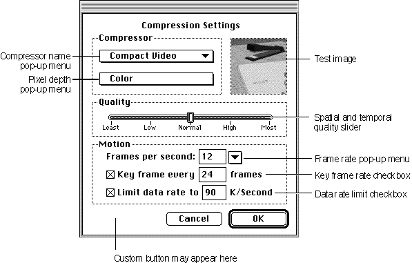

Using Standard Image-Compression Dialog Components
You can use the standard image-compression dialog component to obtain image or image sequence compression parameters from the user and to manage the process of compressing the image or sequence. This component presents a consistent interface to the user and eliminates the need for you to worry about the details of managing this dialog box. Once you have collected the parameter information from the user, you can use the component to instruct the Image Compression Manager to perform the image or sequence compression. Again, the component manages the details for you.Because the standard image-compression dialog component is a component, you use
the Component Manager to open and close your connection. If you are unfamiliar with components or the Component Manager, see the chapter "Component Manager" in Inside Macintosh: More Macintosh Toolbox.Before you can open a connection to a standard image-compression dialog component, be sure that the Component Manager, Image Compression Manager, and 32-bit Color QuickDraw are available. You can use the Gestalt Manager to determine if these facilities are available. For more information about the Gestalt Manager, see the chapter "Gestalt Manager" in Inside Macintosh: Operating System Utilities. For details on 32-bit Color QuickDraw, see the chapter "Color QuickDraw" in Inside Macintosh: Imaging.
Once you have established a connection to a standard image-compression dialog component, your application can present the dialog box to the user. The user selects the desired compression parameters and clicks the OK button. The component then stores these parameters for your application, using them, when appropriate, to work with the Image Compression Manager to compress the image or sequence. Figure 3-1 on page 3-4 shows one of the dialog boxes that is supported by the standard image-compression dialog component provided by Apple.
Every standard image-compression dialog box has its own set of parameter information. This information identifies the compressor component to be used, determines which dialog box is used, and specifies the parameters to be used during the compression operation. This information is stored by the component. You can use functions provided by the component to examine or modify these parameters.
The standard image-compression dialog component provided by Apple allows you to augment or extend the interface provided by its dialog boxes. This component supports a single custom button. Your application enables this button when it instructs the component to display the dialog box to the user. You provide the code that supports this button in a hook function in your application. In addition, this component allows you to define a filter function--you can use this function to process dialog box events before the component. Figure 3-3 identifies the parts of the dialog box supported by Apple's standard dialog component.
Figure 3-3 Elements of the standard image-compression dialog box

The following sections provide more detailed information about using the standard image-compression dialog component.
- "Opening a Connection to a Standard Image-Compression Dialog Component" tells you how to establish a connection between your application and the standard dialog component.
- "Displaying the Dialog Box to the User" describes the steps you must follow to display the standard dialog box to the user, retrieve the user's settings, and compress an image or sequence.
- "Extending the Basic Dialog Box" discusses several ways your application can customize the basic dialog box.
Opening a Connection to a Standard Image-Compression Dialog Component
As is the case with all components, your application must establish a connection to a standard image-compression dialog component before you can use its services. As with other components, you use the Component Manager'sOpenDefaultComponentfunctions to connect to a component. You must use the Component Manager'sCloseComponentfunction to close your application's connection when you are done.Apple provides constants that define the component type and subtype values for standard image-compression dialog components. All of these components have a type value of '
scdi'; you can use theStandardCompressionTypeconstant to specify this value. These components have a subtype value of'imag'; theStandardCompressionSubTypeconstant defines this value.Displaying the Dialog Box to the User
Once you have opened a connection to a standard image-compression dialog component, you can proceed to display the dialog box to the user. In preparation, you might establish default parameter settings and specify a test image. Your application may then instruct the component to display the dialog box to the user. The following sections discuss each of these steps in more detail.Setting Default Parameters
The standard dialog component stores and manages a set of compression parameters for your application. Before presenting the dialog box to the user, you may want to set default values for these parameters. The standard dialog component provides a number of options for establishing these default values:If you supply either a test or a default image, the standard dialog component extracts default compression settings from that image, including color table, grayscale information (if appropriate), and compression defaults (if the source image is already compressed). If any of these default values differ from your needs, use the
- You may supply an image to the component from which it can derive default settings. The component examines the characteristics of the image and sets appropriate default values. The
SCDefaultPictHandleSettingsfunction works with images stored in picture handles; theSCDefaultPictFileSettingsfunction works with images stored in picture files; and theSCDefaultPixMapSettingsfunction works with pixel maps. These functions are discussed in "Getting Default Settings for an Image or a Sequence" beginning on page 3-26.- If you have not set any defaults, but you do supply a test image for the dialog, the component examines the test image and derives appropriate default values based upon its characteristics. The next section discusses how to assign a test image to the user dialog box.
- If you have not set any defaults and do not supply a test image, the component uses its own default values.
- You may modify the settings by using the
SCSetInfofunction, which is described on page 3-36. This function gives you a great deal of freedom--you can use it to modify any of the parameters stored by the component.SCSetInfofunction to modify the value.Designating a Test Image
The standard image-compression dialog component provided by Apple supports a test image in its dialog box. The component uses this test image to show the user the effect of the current set of compression parameters. Whenever the user changes the dialog box settings, the component applies those parameters to the test image and displays the results in its dialog box. In addition, the standard dialog component may sometimes use the test image to obtain hints about the type of compression operation you expect to perform. In some cases, the component may derive default parameter values by examining the test image.The component provides three functions that allow you to specify a dialog box's test image. Each of these functions uses a different image source--a handle, a picture file, or a pixel map. Your application is responsible for obtaining the image and for disposing of it after you are done.
The test image portion of the dialog box supported by Apple's standard image-compression dialog component is a square measuring 80 pixels by 80 pixels. In order to deal with test images that are larger than this area, Apple's component allows you to specify a part of the image to display. You can specify an area of interest, which indicates a portion of the test image that is to be displayed in the dialog box. If the area of interest is still larger than the display area in the dialog box, the component may shrink the image or crop it (or both) until the image fits.
Listing 3-1 shows one way to specify a test image. This code fragment uses an image that is stored in a picture file. The program asks the user to specify the file, using the
SFGetFilePreviewfunction. The program then opens the image file and instructs the standard image-compression dialog component to use the picture that is stored in the file.Listing 3-1 Specifying a test image
Point where; ComponentInstance ci; SFTypeList typeList; SFReply inReply; short srcPictFRef; where.h = where.v = -2; /* center dialog box on the best screen */ typeList[0] = 'PICT'; /* set file type */ SFGetFilePreview (where, "\p", nil, 1, typeList, nil, &inReply); if (!inReply.good) { /* handle error */ } result = FSOpen (inReply.fName, inReply.vRefNum, &srcPictFRef); if (result) { /* handle error */ } result = SCSetTestImagePictFile (ci, /* component connection */ srcPictFRef, /* source picture file */ nil, /* use the entire image */ scPreferScalingAndCropping); /* shrink image and crop it */ if (result) { /* handle error */ }Displaying the Dialog Box and Retrieving Parameters
Standard image-compression dialog components provide two functions that display the dialog box to the user and retrieve the user's compression settings:SCRequestImageSettingsandSCRequestSequenceSettings. Both of these functions start with your default parameter settings. Any changes made by the user are stored by the component. You may use theSCGetInfofunction to examine these settings.The
SCRequestImageSettingsfunction obtains image-compression parameters from the user and displays the dialog box that is shown in Figure 3-1 on page 3-4. TheSCRequestSequenceSettingsfunction works with sequence-compression parameters, using the dialog box shown in Figure 3-2 on page 3-5. Both of these functions allow you to augment or extend the interface in the dialog box--see "Extending the Basic Dialog Box," which begins on page 3-11, for more information about extending the basic dialog boxes.Listing 3-2 shows how to use the
SCRequestImageSettingsfunction to display the dialog box to the user and obtain the resulting image-compression settings. This code fragment obtains the compression parameters from the user and then uses those parameters to compress the image that is stored in the file the user selected in Listing 3-1. The program then stores the compressed image in a different file--this fragment assumes that the destination file has already been selected.Listing 3-2 Displaying the dialog box to the user and compressing an image
ComponentInstance ci; /* component connection */ short srcPictFRef; /* source file */ short dstPictFRef; /* destination file */ result = SCRequestImageSettings(ci); if (result < 0) { /* handle error */ } if (result == scUserCancelled) { /* user clicked Cancel button */ } result = SCCompressPictureFile (ci, /* component connection */ srcPictFRef, /* source picture file */ dstPictFRef); /* dest picture file */ if (result < 0) { /* handle error */ }Note that, because the standard dialog component stores the compression parameters for you, the new user settings become the default values the next time your application interacts with the user. If this is inappropriate, use one of the mechanisms discussed in "Setting Default Parameters" on page 3-8 to modify those defaults.Extending the Basic Dialog Box
Apple's standard image-compression dialog component allows you to customize the operation of the user dialog box in a number of ways. First, you can define a filter function. This function, which is a modal-dialog filter function, can process dialog box events before the component does. Your filter function can then perform custom processing that is appropriate to your application. Because the compression dialog box is a movable modal dialog box, you must provide a filter to process update events for your application windows.Second, you can define a hook function. This function receives item hits before the standard image-compression dialog component does, and can therefore augment the basic dialog box. For example, your hook function can provide additional validation of the user's selections.
Finally, you can define a custom button in the dialog box. You can then use your hook function to detect when the user clicks this button. Your hook function can then extend the dialog box interface by displaying additional dialog boxes, for example.
You use the
scExtendedProcsTyperequest type with theSCSetInfofunction to take advantage of these mechanisms for customizing the user dialog box. Listing 3-3 contains code that uses this function to define a custom button in the dialog box. Listing 3-4 contains this application's hook function.Listing 3-3 Defining a custom button in the dialog box
SCExtendedProcs ep; ep.filterProc = MyFilter; /* custom filter function */ ep.hookProc = MyHook; /* custom hook function */ ep.refcon = 0; /* reference constant for filter and hook functions */ BlockMove("\pDefaults",ep.customName,32); /* custom button name */ SCSetInfo(ci,scExtendedProcsType,&ep); /* set new extended functions */Listing 3-4 shows a hook function that returns the dialog box to its default settings whenever the user clicks the custom button. The standard dialog component calls this function each time the user selects an item in the dialog box. On entry, the hook function receives information about the current dialog box, a pointer to the appropriate standard image-compression dialog parameter block, and a reference constant that is supplied by your application.This hook function first checks to see whether the user clicked the custom button. If so, the function changes the current compression settings.
Listing 3-4 A sample hook function
pascal short MyHook(DialogPtr theDialog,short itemHit, void *params,long refcon) { SCSpatialSettings ss; if (itemHit == scCustomItem) { /* check for custom item */ ss.codecType = 'jpeg'; /* create new settings */ ss.codec = anyCodec; ss.depth = 32; ss.spatialQuality = codecNormalQuality; SCSetInfo(params, /* component connection */ scSpatialSettingsType, /* set spatial settings */ &ss); /* new spatial settings */ } return (itemHit); }In your hook function, you may want to display additional user dialog boxes.
Apple's standard image-compression dialog component provides two functions that help you position your dialog box on the screen. TheSCPositionDialogfunction places a dialog box in a specified location; theSCPositionRectfunction positions a rectangle. By using these functions you can position your dialog boxes near the standard dialog box.Listing 3-5 contains code that uses the
SCPositionDialogfunction to place a Standard File Package dialog box onto the same screen as the standard image-compression
dialog box.Listing 3-5 Positioning related dialog boxes
Point where; /* positions dialog boxes */ ComponentInstance ci; /* component connection */ where.h = where.v = -2; /* center dialog box on the best screen */ result = SCPositionDialog (ci, /* component connection */ -3999, /* resource number of dialog box */ &where); /* returns upper-left point */ SFPutFile (where, /* positions the dialog box */ "\pSave compressed picture as:", "\pUntitled", nil, &outReply);
Subtopics
- Opening a Connection to a Standard Image-Compression Dialog Component
- Displaying the Dialog Box to the User
- Setting Default Parameters
- Designating a Test Image
- Displaying the Dialog Box and Retrieving Parameters
- Extending the Basic Dialog Box